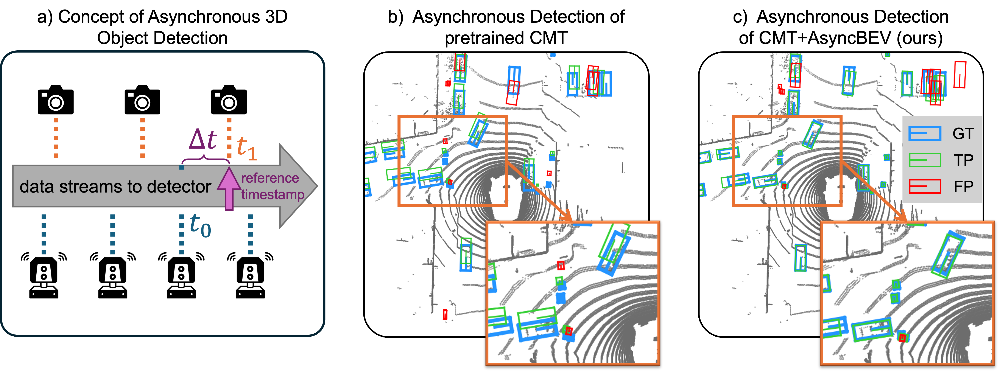

a) General concept of asynchronous 3D object detection.
b) Pretrained CMT (Yan et al., 2023) under sensor asynchrony, with large translation error.
c) AsyncBEV improves CMT robustness and corrects most spatial misalignment of predicted boxes.
In autonomous driving, multi-modal perception tasks like 3D object detection typically rely on well-synchronized sensors, both at training and inference. However, despite the use of hardware- or software-based synchronization algorithms, perfect synchrony is rarely guaranteed: Sensors may operate at different frequencies, and real-world factors such as network latency, hardware failures, or processing bottlenecks often introduce time offsets between sensors. Such asynchrony degrades perception performance, especially for dynamic objects.
To address this challenge, we propose AsyncBEV, a trainable lightweight and generic module to improve the robustness of 3D Birds' Eye View (BEV) object detection models against sensor asynchrony. Inspired by scene flow estimation, AsyncBEV first estimates the 2D flow from the BEV features of two different sensor modalities, taking into account the known time offset between these sensor measurements. The predicted feature flow is then used to warp and spatially align the feature maps, which we show can easily be integrated into different current BEV detector architectures (e.g., BEV grid-based and token-based).
Extensive experiments demonstrate AsyncBEV improves robustness against both small and large asynchrony between LiDAR or camera sensors in both the token-based CMT and grid-based UniBEV, especially for dynamic objects. We significantly outperform the ego motion compensated CMT and UniBEV baselines, notably by 16.6 % and 11.9 % NDS on dynamic objects in the worst-case scenario of a 0.5s time offset.
Same scene, different models (scene-0003)
@inproceedings{wang2026asyncbev,
author = {Wang, Shiming and Caesar, Holger and Nan, Liangliang and Kooij, Julian FP},
title = {AsyncBEV: Cross-modal Flow Alignment in Asynchronous 3D Object Detection},
booktitle = {ICLR},
year = {2026},
}